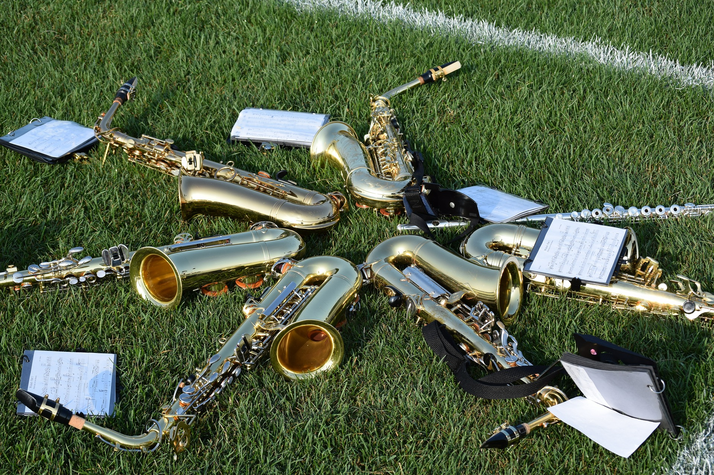

はじめに。
こんにちは、UGです。今回はオリジナルで音楽を制作する際の作曲や編曲においてのコツを紹介していこうと思います。
私も今まで100曲ほどオリジナルを作ってきましたが、どうすれば最後まで飽きずに楽しんで聴いてもらえるかということを意識して
曲作りをしてきました。
小ネタも含みながらですが、音楽理論を踏まえて今までの経験上でのポイントをお話できればと思います。
下の３つに分けて解説をしてきます。
・作曲（主にメロディ）について
・曲の構成や編曲について
・音作りについて
それでは一つずつ解説していきましょう
作曲（主にメロディ）について
強起、弱起について
この言葉を聞いたことがあるでしょうか？これは小節の一番初にメロディの第一音がくるかどうかのことです。
強起が小節の第一拍から歌が始まること、弱起がそれ以外のタイミングで歌が始まることを指します。
一般的には強起の方が安定しており力強く感じ、弱起の方が不安定なイメージを与えると言われております。
この感じ方についてはメロディによってまちまちかなと、個人的には感じていますが、私が重要視しているのが
一曲の中にAメロ、Bメロ、サビなどがあれば、この二つのどちらかに偏らないようにすることです。
そうすることによって、曲を通してメリハリが生まれますし、聴いていて最後まで飽きない構成にできます。
サビをどちらにするかですが、強起にすれば頭の部分が鮮明に残るメロディとなります。
弱起も使い方でいろいろ変わりますが
第一拍の前から入る方がサビらしいテイストがでるでしょう。
キーについて
キーとは音の高さのことですね。カラオケでよく原曲を自分の声が合わないから音程を下げたり上げたりしますよね。
キーを変更しているということです。
メロディを考える上でキーの設定はとても重要になります。自分が歌う曲でしたら歌って気持ちいい音程で作ればいいですが
他の人に歌ってもらう場合というのは、その人の声質や音域を理解した上で設定しなければなりません。
ここで重要なのは髙い音ばかり意識せずに低い音（声）をどのように活かすかです。
曲の構成の中で低い部分を作るとより際立たせたい髙い音の時により際立たすことができます。
また低い声が魅力的なシンガーもいます。曲作りをするということは歌い手の魅力を引き出すことでもあります。
下記のリンク私の恐縮ですが、女性シンガーの低い声を活かそうと作った曲です。
よろしければお聞きください。
曲の構成や編曲について

このパートが一番重要かつ、伝えたいことが多いです。
ただ、あくまでも手段の一つなので、頭の片隅に置いておいて頂いてポイントポイントで使ってみてください。
全部に使うとすべて同じ曲になってしまうので（笑）
サビと前奏とを同メロディにする
これはポップミュージックにはよく使われる手法ですね。
キャッチーなサビのメロディをイントロにも持ってくることで、まずリスナーの心を掴むことができます。
またイントロで使った音をそのままサビのバックにも使うことも効果的ですね。
そうすることで、反復効果が出ますし、曲全体のイメージを統一できます。
下記、また私の曲ですが参考にお聴きください。
サビから始める、または歌から始める
これは特にサブスク時代の今には有効な手段かもしれませんね。
スキップレートという言葉をご存じでしょうか？曲を最後まで聴かずに飛ばしてしまうことです。
実はSpotifyなどでは30秒以上再生されなかったものは1再生としてカウントされません。
つまり30秒のあいだに心を掴まなければダメということです。
こちらに有効な手段としては曲をサビから始める、または前奏なしに歌メロから始めるという手法です。
最近の流行りの曲を聴いてみてください。これに則った作り方をしている曲が多いと思います。
もちろんそうでなくても素晴らしいイントロの曲なども存在しますのでこれに限ったことではありませんが、
考え方の一つとしてもっておくべきかと思います。
先にお伝えしたサビと前奏を同じメロディにする、というのも同じくこの効果があるでしょう。
1番、2番でアレンジを変える
プロの曲をよく聴いてみてください。
ドラムからベース、その他に至るまで1番と2番でアレンジを変えています。
何回も聴きたくなる曲というのは、本当に緻密に作られています。徐々に音が分厚くなっていくものあれば、その逆もあります。
例えばですが、リズムも1番よりも2番の方を若干軽快にすることで気分がだんだん高揚してきます。
曲作り（アレンジ）をしていてこの作業をなくせば意外に早くできてしまいますが、どうしても単調になってしまいます。
ここでひと踏ん張りしてアレンジを凝るのがよい曲を作るひとつのポイントだと思います。
歌メロと歌メロの間に遊びを入れる
これはかなり小技ですが紹介しておきます。
ギターやキーボードなどのバッキングですが歌と同居していまうと、歌の邪魔になる場合があります（あえてそうする時もありますが）。
そこで歌のちょっとした間に遊びを入れるという手法です。
これもプロの曲を聴いてみると多用していますね。
音を重ねすぎない
曲を作っているとついいろんな音を重ねすぎてしまいます（私もその傾向があるので気をつけています）。
ですが、理想は際立たせたいバッキングなどを単体でいれることです。
いい曲というのはバックでなっている音も耳に残りますが、音が無駄に多すぎてごちゃっとなってると耳に残りません。
このような点も是非注意して聴いてみてください。
下記の曲、非常に有名ですがPharrell Williams - Happy。
こちらの音数（音種）は非常に少ないながら
ある種厚みも感じる素晴らしいアレンジだと思います。
音づくりについて
最後に音作りについて説明していきます。
実際どうするかの技術的な部分はまたcakewalkの使い方の
コーナーで詳しく説明をしていきますが、今回は考え方のご紹介に留めておきます。
リヴァーブについて
リヴァーブとは、残響音のことですね。エコーという表現の方が伝わりやすいかもしれません。
曲をマスタリングしていく際に必ず各パートに多かれ少なかれこのリヴァーブをかけていくのですが、そこでのポイントをお伝えします。
まず、気を付けたいのはかけ過ぎ注意ですね。
リヴァーブをかけると一見キレイに聞こえるのですがかけ過ぎると
音の輪郭がぼやけてしまいますし、うるさく感じてしまいます。
あと、基本として押さえておきたいのですが、加工なしの音の方がリヴァーブをかけた音より前に出て聞こえる、という性質があります。
ですので、目立たせたいヴォーカルなどは返ってリヴァーブ薄目にした方がよいのです。
逆に言うと遠くで聞かせたいな、または他の楽器とうまく共存させたいなという時はギターは薄く、キーボードは濃くするなどをして
音作りをすると空間的になり非常に有効に使えます。
あと、年代によってもリヴァーブのかけ方が結構違います。80年代のアイドルソングなどはドラムにリヴァーブを強くかけて
いたりします。
ちょっとした工夫で曲の雰囲気を作ることができますが、使い方を間違えると聞き苦しくなるので
注意をしましょう。
パンをうまく使う
パンとは、ステレオで音を左右に分けることです。
これも音作りでは非常に重要になります。特にドラムなどは音色によってパンを分けることで非常に空間的になります。
具体的にはバスドラは中心、スネアをやや左、ハイハットをかなり左に、シンバルは右、といった具合にしてみると広がりを持って
実際のドラムを聴いているように聞こえるでしょう。
ベースは基本的に中心に持って来た方がよいですが、その他のギターやシンセサイザー、ヴォーカルなどは様々に遊ぶことができます。
その他にも様々なパンを使った効果的な手法があります。
例としていくつかあげますが、一つはヴォーカルを中心に持ってきてコーラスを左右に振って挟むという手法です。
コーラス隊がヴォーカルを包み込むような演出ができます。
二つめにギターのバッキングなどで同じフレーズを2回録音して、それぞれを左右に振るという手法です。
これが面白くてよほどの技量がないと2回弾いてまったく同じものは録音できません。
これが逆に若干のずれを産んで微妙な揺れが音に産まれます。
また左右にパンを振っていることによってサラウンド感をだすことができるんですね。
一例を紹介しましたが、是非皆さま思い思いにアレンジしてみてください。新しい発見があると思います。
さて、今回オリジナル音楽の創る際のコツというテーマで紹介をしていきました。
長くなりましたので、今回以上とさせて頂きますが、今後も第二弾、第三弾と小ネタを紹介できればと思います。
ご紹介しているのは半分音楽理論、あとは私の経験則です。
音楽制作とは今まで聴いてきた音楽のエッセンスを自らのフィルターを通してアウトプットすることです。
私もこれからまた好きな音楽を増やして、その曲のよさを分析して引き出しを増やしていこうと思います。
今後また、今回出てきたことのそれぞれを深堀り（説明）するブログをあげていきます。
最後までお読み頂き、本当にありがとうございました。